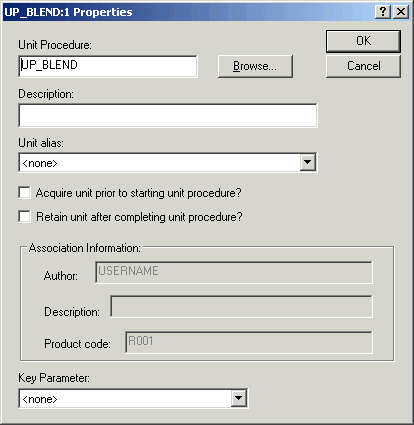

Creating procedures
Procedures are the highest level in the recipe hierarchy. A procedure includes unit procedures in the steps of its procedural function chart. The unit procedures in a procedure may (and usually do) run on more than one unit or unit class.
The Properties dialog for a unit procedure step within a procedure includes an additional check box option: Acquire unit prior to starting unit procedure? A procedure may control several units simultaneously; this option lets you decide when a branch of the procedure can be started. (If the check box is checked for any unit procedure in a parallel branch, all of the required units for that unit procedure must be acquired before any unit procedures in that branch will be started.)
Additionally, selecting Retain unit after completing unit procedure means that the procedure acquires the unit, and the unit is not released until the completion of another unit procedure for which this selection is clear (that is, the Retain unit after completing unit procedure check box is not selected). If this check box is clear, the unit is released as soon as the unit procedure completes.
We will leave both options unselected for the purpose of this tutorial.

Procedures are created in the same way as unit procedures and operations.